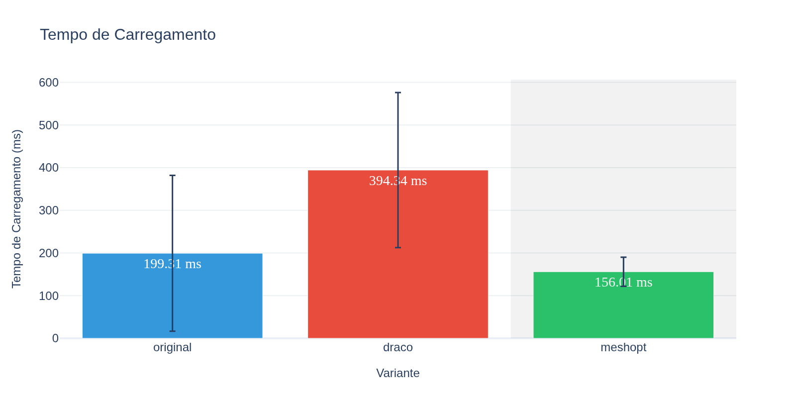
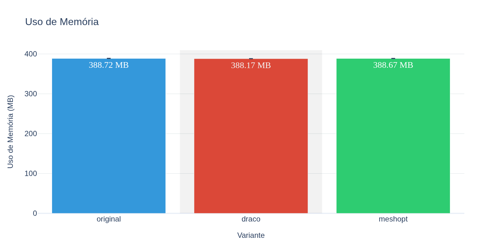
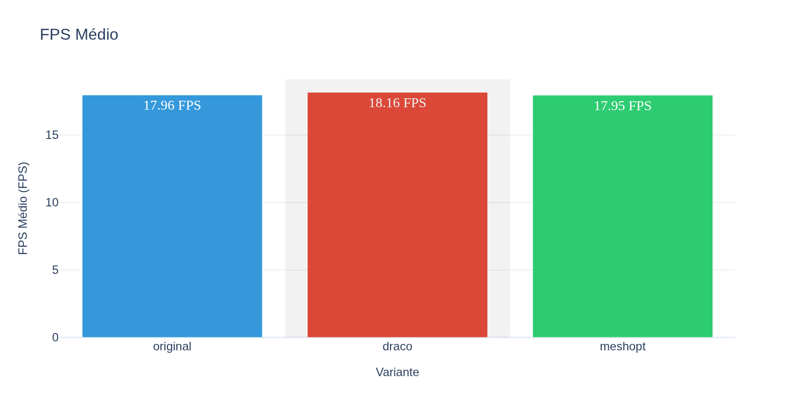
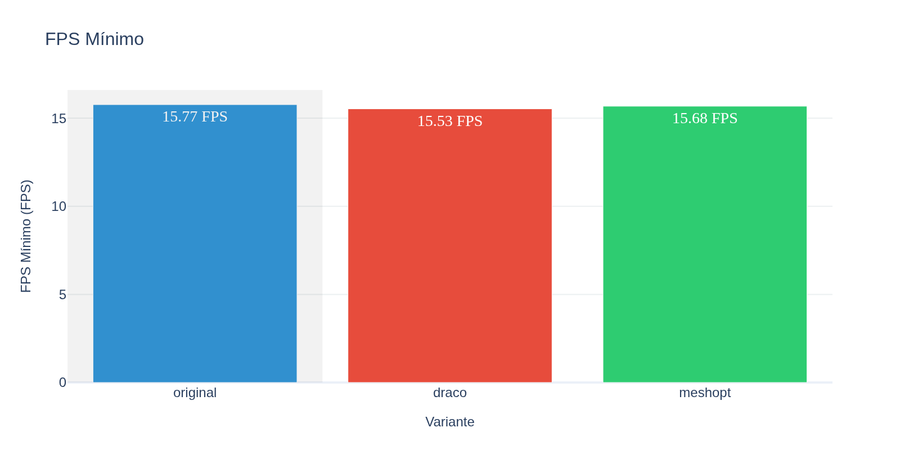
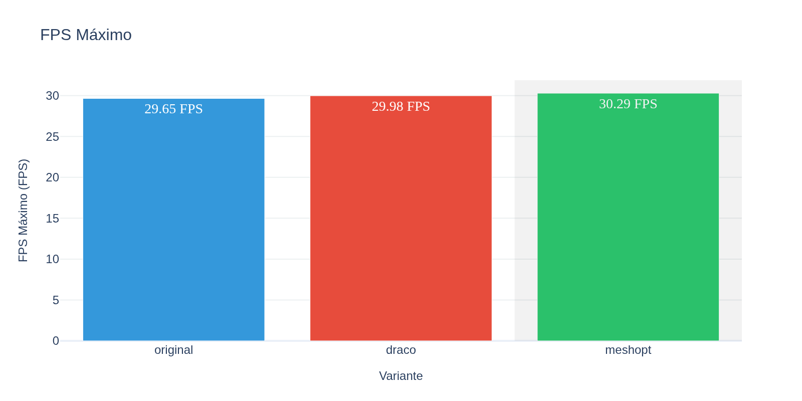
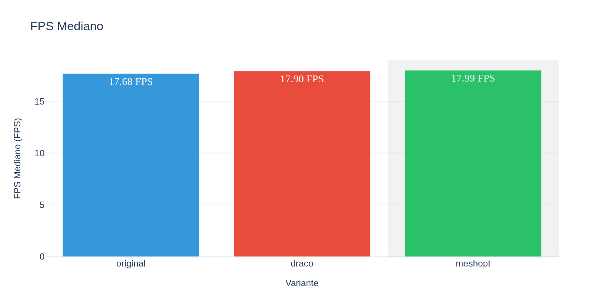
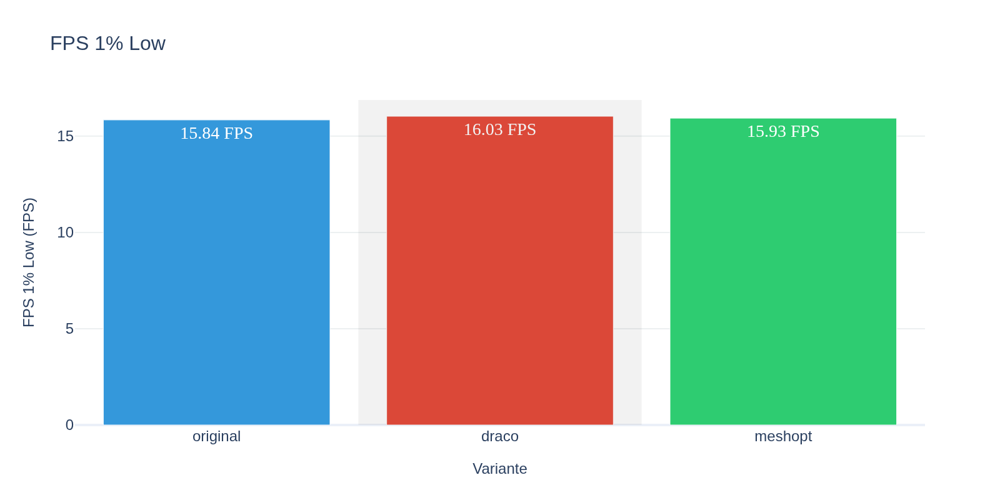
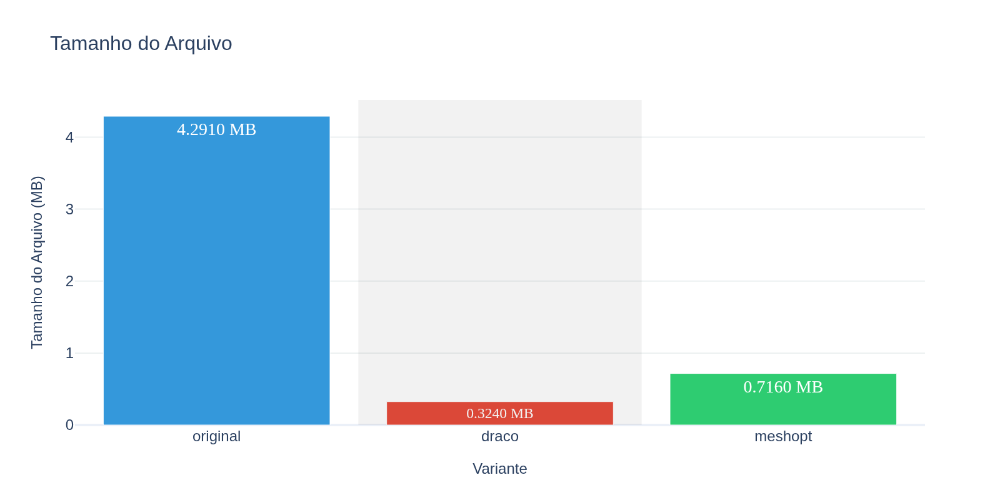

Comparação rápida entre todas as variantes testadas. Os valores mostram médias de todas as execuções.
| Variante | Tamanho (MB) | FPS Médio | Load Time (ms) | Memória (MB) | Amostras |
|---|---|---|---|---|---|
| original | 4.2910 | 17.96 | 199.31 | 388.72 | 3 |
| draco | 0.3240 | 18.16 | 394.34 | 388.17 | 3 |
| meshopt | 0.7160 | 17.95 | 156.01 | 388.67 | 3 |
Compare os benefícios (redução de tamanho) com os custos (performance e tempo de carregamento). Use esta análise para decidir qual compressão usar.
💡 Boa compressão com trade-off aceitável
💡 Excelente compressão com impacto mínimo na performance
Tempo em milissegundos necessário para carregar e processar o modelo 3D na memória.
Por que é importante: Determina quanto tempo o usuário aguarda antes de poder visualizar o modelo. Tempos altos causam má experiência.
Valores ideais: < 500ms para modelos pequenos/médios, < 1000ms para modelos grandes

Fórmula: Média aritmética dos valores de load_ms de todas as amostras da variante
Fonte dos dados: Coluna load_ms no CSV
Modelos comprimidos (Draco/Meshopt) geralmente têm tempo de carregamento maior devido à descompressão. Compare o overhead adicional com o ganho de tamanho de arquivo.
| Timestamp | Valor |
|---|---|
| 2025-10-23 08:12:26-03:00 | 410.31 ms |
| 2025-10-23 08:12:32-03:00 | 95.84 ms |
| 2025-10-23 08:12:38-03:00 | 91.79 ms |
| Timestamp | Valor |
|---|---|
| 2025-10-23 08:13:01-03:00 | 603.36 ms |
| 2025-10-23 08:13:07-03:00 | 307.06 ms |
| 2025-10-23 08:13:13-03:00 | 272.60 ms |
| Timestamp | Valor |
|---|---|
| 2025-10-23 08:12:43-03:00 | 191.62 ms |
| 2025-10-23 08:12:49-03:00 | 123.55 ms |
| 2025-10-23 08:12:55-03:00 | 152.87 ms |
Quantidade de memória RAM consumida pelo modelo após carregamento completo.
Por que é importante: Memória é um recurso limitado, especialmente em dispositivos móveis. Alto consumo pode causar crashes ou impactar outras aplicações.
Valores ideais: Proporcional ao tamanho e complexidade do modelo. Modelos simples devem usar < 100MB.

Fórmula: Média aritmética dos valores de mem_mb de todas as amostras da variante
Fonte dos dados: Coluna mem_mb no CSV
Modelos comprimidos podem expandir na memória após descompressão. Verifique se o uso de memória permanece aceitável para seu caso de uso.
| Timestamp | Valor |
|---|---|
| 2025-10-23 08:12:26-03:00 | 388.99 MB |
| 2025-10-23 08:12:32-03:00 | 388.58 MB |
| 2025-10-23 08:12:38-03:00 | 388.61 MB |
| Timestamp | Valor |
|---|---|
| 2025-10-23 08:13:01-03:00 | 388.13 MB |
| 2025-10-23 08:13:07-03:00 | 388.17 MB |
| 2025-10-23 08:13:13-03:00 | 388.20 MB |
| Timestamp | Valor |
|---|---|
| 2025-10-23 08:12:43-03:00 | 388.64 MB |
| 2025-10-23 08:12:49-03:00 | 388.67 MB |
| 2025-10-23 08:12:55-03:00 | 388.70 MB |
Taxa média de quadros por segundo durante a renderização do modelo.
Por que é importante: Mede a performance geral de rendering. FPS baixo resulta em animações travadas e má experiência visual.
Valores ideais: ≥ 60 FPS (experiência suave), ≥ 30 FPS (aceitável), < 30 FPS (problemático)

Fórmula: Média aritmética dos valores de fps_avg de todas as amostras da variante
Fonte dos dados: Coluna fps_avg no CSV
Compare entre variantes para identificar impacto na performance. Diferenças menores que 5% são geralmente imperceptíveis.
| Timestamp | Valor |
|---|---|
| 2025-10-23 08:12:26-03:00 | 17.70 FPS |
| 2025-10-23 08:12:32-03:00 | 18.05 FPS |
| 2025-10-23 08:12:38-03:00 | 18.14 FPS |
| Timestamp | Valor |
|---|---|
| 2025-10-23 08:13:01-03:00 | 17.81 FPS |
| 2025-10-23 08:13:07-03:00 | 17.68 FPS |
| 2025-10-23 08:13:13-03:00 | 19.00 FPS |
| Timestamp | Valor |
|---|---|
| 2025-10-23 08:12:43-03:00 | 17.98 FPS |
| 2025-10-23 08:12:49-03:00 | 18.30 FPS |
| 2025-10-23 08:12:55-03:00 | 17.57 FPS |
Menor taxa de FPS registrada durante todos os testes.
Por que é importante: Identifica os piores momentos de performance (picos de lag). Importante para garantir experiência consistente.
Valores ideais: > 30 FPS (não cair abaixo desse valor)

Fórmula: Valor mínimo entre todos os fps_min das amostras da variante
Fonte dos dados: Coluna fps_min no CSV
FPS mínimo muito abaixo da média indica instabilidade. Investigate possíveis causas (carregamento, garbage collection, etc).
| Timestamp | Valor |
|---|---|
| 2025-10-23 08:12:26-03:00 | 15.87 FPS |
| 2025-10-23 08:12:32-03:00 | 15.89 FPS |
| 2025-10-23 08:12:38-03:00 | 15.77 FPS |
| Timestamp | Valor |
|---|---|
| 2025-10-23 08:13:01-03:00 | 15.53 FPS |
| 2025-10-23 08:13:07-03:00 | 15.62 FPS |
| 2025-10-23 08:13:13-03:00 | 16.95 FPS |
| Timestamp | Valor |
|---|---|
| 2025-10-23 08:12:43-03:00 | 16.37 FPS |
| 2025-10-23 08:12:49-03:00 | 15.75 FPS |
| 2025-10-23 08:12:55-03:00 | 15.68 FPS |
Maior taxa de FPS registrada durante todos os testes.
Por que é importante: Mostra o potencial máximo de performance em condições ideais.
Valores ideais: Quanto maior, melhor. Pode ser limitado por VSync ou refresh rate do monitor.

Fórmula: Valor máximo entre todos os fps_max das amostras da variante
Fonte dos dados: Coluna fps_max no CSV
FPS máximo similar entre variantes indica que a geometria não é o gargalo principal.
| Timestamp | Valor |
|---|---|
| 2025-10-23 08:12:26-03:00 | 21.08 FPS |
| 2025-10-23 08:12:32-03:00 | 25.64 FPS |
| 2025-10-23 08:12:38-03:00 | 29.65 FPS |
| Timestamp | Valor |
|---|---|
| 2025-10-23 08:13:01-03:00 | 21.39 FPS |
| 2025-10-23 08:13:07-03:00 | 29.98 FPS |
| 2025-10-23 08:13:13-03:00 | 29.38 FPS |
| Timestamp | Valor |
|---|---|
| 2025-10-23 08:12:43-03:00 | 21.82 FPS |
| 2025-10-23 08:12:49-03:00 | 30.29 FPS |
| 2025-10-23 08:12:55-03:00 | 21.84 FPS |
Valor central da distribuição de FPS (50º percentil).
Por que é importante: Mais resistente a valores extremos (outliers) do que a média. Representa melhor a experiência típica.
Valores ideais: Próximo ao FPS médio indica distribuição estável

Fórmula: Mediana dos valores de fps_median de todas as amostras da variante
Fonte dos dados: Coluna fps_median no CSV
Se fps_median for significativamente diferente de fps_avg, há outliers impactando a média.
| Timestamp | Valor |
|---|---|
| 2025-10-23 08:12:26-03:00 | 17.59 FPS |
| 2025-10-23 08:12:32-03:00 | 17.68 FPS |
| 2025-10-23 08:12:38-03:00 | 18.11 FPS |
| Timestamp | Valor |
|---|---|
| 2025-10-23 08:13:01-03:00 | 17.90 FPS |
| 2025-10-23 08:13:07-03:00 | 17.61 FPS |
| 2025-10-23 08:13:13-03:00 | 18.84 FPS |
| Timestamp | Valor |
|---|---|
| 2025-10-23 08:12:43-03:00 | 17.99 FPS |
| 2025-10-23 08:12:49-03:00 | 18.20 FPS |
| 2025-10-23 08:12:55-03:00 | 17.41 FPS |
FPS do 1º percentil inferior - representa o pior 1% dos frames capturados.
Por que é importante: Métrica crítica para detectar stuttering e travamentos momentâneos que arruínam a experiência do usuário.
Valores ideais: > 50% do FPS médio indica boa consistência

Fórmula: Média dos valores de fps_1pc_low de todas as amostras da variante
Fonte dos dados: Coluna fps_1pc_low no CSV
FPS 1% Low muito abaixo da média indica problemas de frame pacing ou stuttering. Isso impacta mais a experiência que um FPS médio alto.
Tamanho do arquivo do modelo em megabytes no disco.
Por que é importante: Impacta tempo de download, uso de banda, armazenamento e tempo de carregamento inicial.
Valores ideais: Quanto menor, melhor - mas sem perder qualidade visual necessária

Fórmula: Média dos valores de file_mb de todas as amostras da variante
Fonte dos dados: Coluna file_mb no CSV
Calcule a taxa de compressão em relação ao original. Avalie se o ganho de tamanho justifica possíveis perdas de performance.
| Timestamp | Valor |
|---|---|
| 2025-10-23 08:12:26-03:00 | 4.29 MB |
| 2025-10-23 08:12:32-03:00 | 4.29 MB |
| 2025-10-23 08:12:38-03:00 | 4.29 MB |
| Timestamp | Valor |
|---|---|
| 2025-10-23 08:13:01-03:00 | 0.32 MB |
| 2025-10-23 08:13:07-03:00 | 0.32 MB |
| 2025-10-23 08:13:13-03:00 | 0.32 MB |
| Timestamp | Valor |
|---|---|
| 2025-10-23 08:12:43-03:00 | 0.72 MB |
| 2025-10-23 08:12:49-03:00 | 0.72 MB |
| 2025-10-23 08:12:55-03:00 | 0.72 MB |
Os benchmarks foram realizados usando o sistema de métricas do PolyDiet, que:
Ambiente:
Relatório gerado automaticamente pelo PolyDiet Report Generator